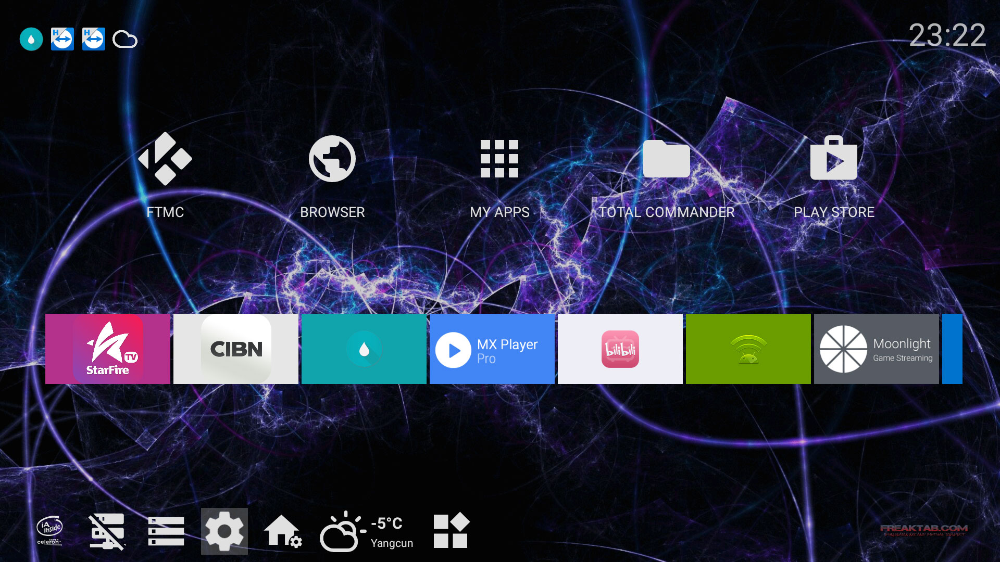
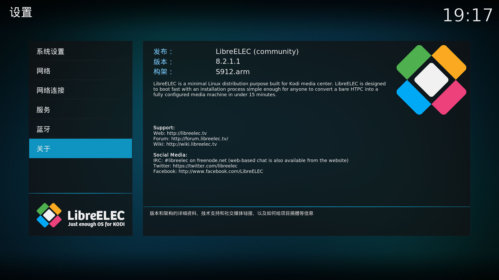
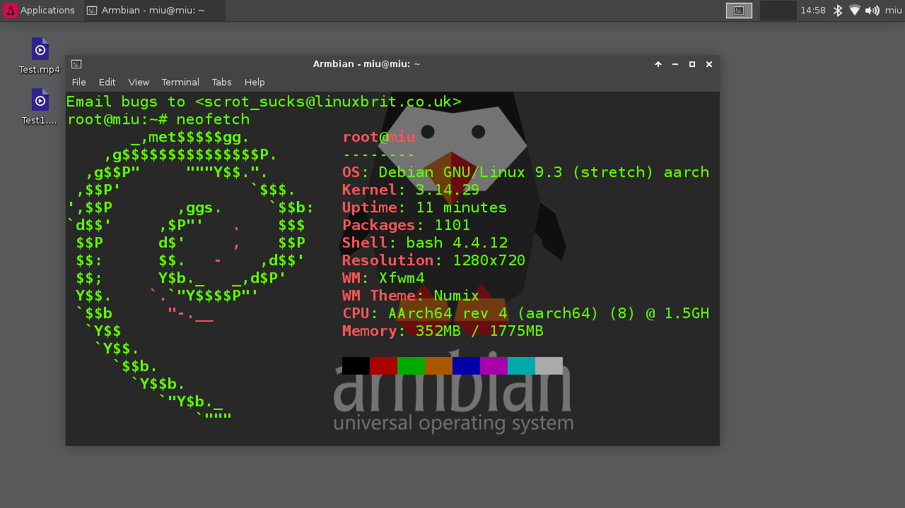

前几天给盒子清数据，连上网就被自动装了 CIBN聚精彩 、CIBN聚体育。
emmmmm…
加上之前这系统用着各种不爽，像是没有通知栏啊、没有多任务界面啊、太丑啊、版本太低啊、kodi 花瓶之类的，所以干脆刷成别的好了。找找发现 S912 有好多包，还有 LibreELEC、Lakka 之类的。
后来我发现这玩意还能装 Linux ，真是神奇，不过 Linux 的话还是等盒子退休再说吧。
备份
刷什么之前都应该先做好备份，因为官方根本就没提供固件，只有卡刷包。
为了保险起见，推荐备份之前刷入这个下面的 TWRP 。（因为官方的 rec 进去就是格式化 data 并重启，如果恢复失败有可能会无限重启。
备份到电脑
- 盒子执行（需要root）
/system/xbin/busybox nc -l -p 5000 -e /system/xbin/busybox dd if=/dev/block/mmcblk0 - 电脑执行
nc 盒子IP 5000 > mmcblk0
ps. 也可以不备份 data 分区，这样文件会比较小，也会省很多时间和空间。/system/xbin/busybox nc -l -p 5000 -e /system/xbin/busybox dd if=/dev/block/mmcblk0 bs=4M count=643
备份到 SD 卡或 U 盘
盒子执行（需要root）/system/xbin/busybox dd if=/dev/block/mmcblk0 of=/storage/SD卡UUID/mmcblk0nodata bs=4M count=643SD卡UUID可以在/storage里面看，是一串字母和数字。
备份这段时间我们可以去下载刷机包。
其他 Android

刷机会清除全部数据，记得备份原系统和数据。
另外再备份下这两个文件，刷完再恢复。
1 | ## 蓝牙遥控器键值 |
- 用 BootcardMaker 制作启动卡。然后插进盒子，执行
reboot update，盒子会重启升级。 - 或是用双公头 USB 线连接电脑和盒子（插靠后面的 USB 口）用 USB Burning Tool 刷。
一些固件的下载地址
- Android 6.1 上面的截图就是这个固件。自带 Samba ，启动器带通知显示。不知道为什么 superceleron 的原帖消失了，我把固件上传到了网盘。先刷 SCV10A-GT1.img ，再卡刷 OTA-SCV11-GT1.zip 和 SCV11-A912-AP6255-Support.zip 。
- Android 7.1 自带 Google 全家桶的 Android 7.1 固件。
Android TV 7.1.2 自带 Google 全家桶的 Android TV 7.1 固件。最近更新后蓝牙遥控器会失效。- Android TV 7.1.2 只有 Play 服务、商店和 YouTube 。不过精简的有点多，DocumentsUI 都没，我放到网盘里了，可以自己添加。
- Android TV 9 目前在用 ，有线网卡可以驱动，还没发现有什么明显的 bug。 root 的话要用 magisk 修补 recovery ，不过系统是 32 位的，所以要在 32 位的机器上打补丁。
- 还可以自己 Google 搜索或是去 freaktab 、xda 这类的地方找。
一些问题和解决办法
- 蓝牙遥控器只能关机不能开机：按钮改成休眠后可休眠唤醒。不过盒子24小时挂着 BT 下动画片，用不着关机功能问题也不大。
- 红蓝按钮：修改
HIMEDIA.kl，把红蓝键改成别的功能（按键参考）。我这有一个改好的，红色是静音，蓝色是截图。 - 鼠标模式：安装 Mouse Toggle for Android TV ，在无障碍中启用，按音量减再快速按音量加开启，HOME 关闭。
- 语音：换个支持 Android TV 语音的遥控器。或者在手机上装个 Android TV Remote Control 。
- 另外有些 Android TV 固件不能驱动有线网卡，目前还没有解决方法。
前几天自带的蓝牙遥控器坏掉了，我脑抽花80大洋买了个原厂白的…现在想想还不如买个飞鼠。
LibreELEC

LibreELEC 其实就是个 kodi ，扩展比 kodi 多点。跟 Android 版的 kodi 比起来就是多了些程序，放 H265 不会花屏了。也能装 entware 之类的。
不过 LibreELEC 官方已经不对 S912 更新了，可以换用 CoreELEC 。
Lakka 也已经支持 S912 了，安装和 LibreELEC 差不多。
它们都可以装到 SD 卡里面，官方的安装说明写的很详细，照着做就好了。
另外这两个蓝牙遥控器也是只能关机不能开机，按钮改成休眠后可休眠唤醒。
Linux

装 Linux 的话可以直接用别人做好的镜像做启动卡，有 Armbian、ArchLinux、openSUSE 和 AltLinux 的，可以去这个帖子下载。安装说明可以看这个。
刷回官方（恢复备份）
把备份的文件放到 SD 卡 或 U 盘，重启到 TWRP 。
reboot recovery因为有些固件恢复到一半会休眠，所以用 TWRP 恢复。
如果 SD 卡 或 U 盘 没有自动挂载的话，需要手动挂载。
mount /dev/block/mmcblk1 /usb-otg/上面是 SD 卡 的路径，U 盘 的话可能是
/dev/block/sda，具体可以在/dev/block/下面看。恢复备份。
dd if=/usb-otg/mmcblk0nodata of=/dev/block/mmcblk0恢复完成后用 TWRP 重启到 Recovery。
reboot recovery
如果之前的系统是原厂 Recovery 的话会自动格式化 data 分区并重启。
如果是 TWRP 的话要手动格式化一下。
官方固件一些问题的解决方法
- 没有通知栏：装 Snowball Smart Notifications 显示通知。
- 没有最近任务界面：插个飞鼠或者键盘 Alt + Tab 。
- 官方固件偷偷给用户安装软件：
- 后台偷偷安装软件的是系统自带的启动器，可以换用第三方启动器然后直接删掉或禁用自带的启动器。
- 后来通过抓包找到推送列表地址，也可以在 hosts 里面加上一句
127.0.0.1 apkhome.hinavi.cp81.ott.cibntv.net屏蔽。 - 屏蔽推送和广告的 hosts 。

还有一些有的没的。